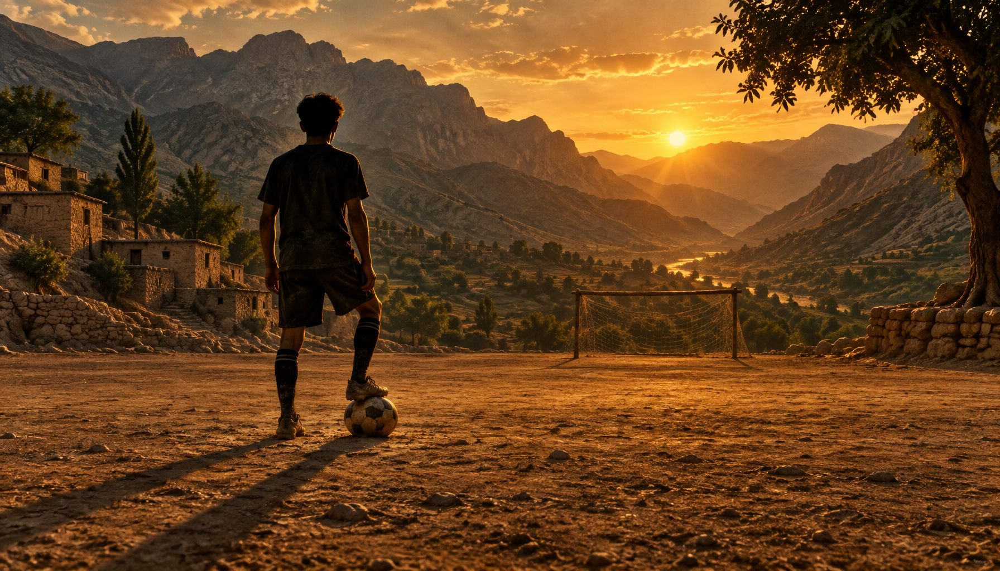
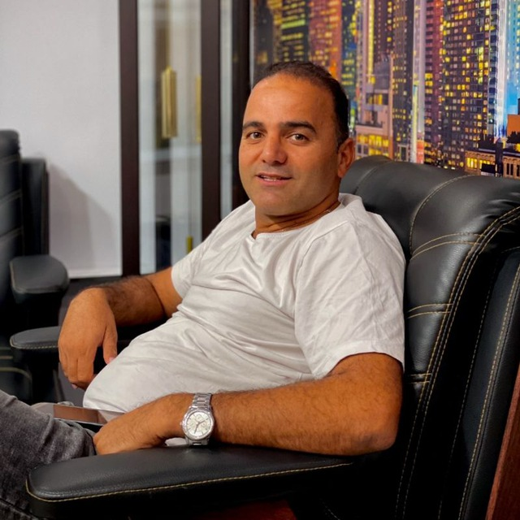

تکلهای سنگین
روی چمن، تکلهای خشن و دقیقش مهاجمان حریف را به دردسر میانداخت؛ مدافعی که عبور از او تقریباً ناممکن بود.

فوتبالیست سرسخت و خوشاخلاق • ملقب به «بولدوزر دانشگاه»

حشمت صیاد پرست، که بسیاری او را با نام «حشمت صیاد» میشناسند، فوتبال را از زمینهای خاکی روستای شهرک ولیعصر در شهرستان بدرهٔ ایلام آغاز کرد؛ جایی که استعدادش خیلی زود او را از همسالانش جدا کرد. در دوران ابتدایی، راهنمایی و دبیرستان همواره جزو نفرات برتر فوتبال بود و در تمامی مسابقات شهرستانی و استانی به میدان رفت.
در دوران دانشگاه نیز فوتبال را رها نکرد و در مسابقات دانشجویی سراسر کشور — از خوزستان تا مشهد — درخشید. اما مشکلات مالی هرگز اجازه نداد رؤیای فوتبال حرفهایاش آنگونه که شایستهاش بود محقق شود.
پس از پایان دانشگاه، در دانشگاه علوم پزشکی تهران استخدام شد و همچنان فوتبال را ادامه داد؛ با تیمهای بیمارستان شریعتی و بیمارستان امیراعلم تهران بارها در مسابقات شرکت کرد و مقامهای گوناگونی به دست آورد. او سالها در لیگهای پایین تهران و شهریار نیز بازی کرد، اما هرگز به فوتبال حرفهای نرسید — به قول دوستانش، «هیچوقت به حقش در فوتبال نرسید».
روستای شهرک ولیعصر، بدرهٔ ایلام
اولین لمسهای توپ روی خاک؛ جایی که عشق به فوتبال شکل گرفت.
ابتدایی، راهنمایی و دبیرستان
همواره جزو نفرات برتر فوتبال و حاضر در تمامی مسابقات شهرستانی و استانی.
مسابقات کشوری — خوزستان، مشهد و دیگر شهرها
ادامهٔ فوتبال در دانشگاه و درخشش در مسابقات دانشجویی سراسر کشور؛ رؤیایی که مشکلات مالی آن را نیمهتمام گذاشت.
استخدام پس از پایان دانشگاه
ورود به دانشگاه علوم پزشکی تهران و ادامهٔ فوتبال در کنار کار؛ همیشه جزو نفرات برتر.
بیمارستان شریعتی و بیمارستان امیراعلم تهران
حضور مداوم در ترکیب تیمی و کسب مقامهای گوناگون در مسابقات.
لیگهای پاییندسته
بازی در تیمهای لیگ پایین تهران و شهریار؛ تلاشی بیوقفه که هرگز به فوتبال حرفهای ختم نشد.
روی چمن، تکلهای خشن و دقیقش مهاجمان حریف را به دردسر میانداخت؛ مدافعی که عبور از او تقریباً ناممکن بود.
ضربات سنگین شوتش چنان کوبنده بود که بارها دروازهبانهای تیم مقابل را راهی مصدومیت کرد.
درون زمین سفت و خشن، بیرون زمین خوشاخلاقترین چهرهٔ تیم؛ تضادی که او را دوستداشتنی میکرد.
«هیچوقت به حقش در فوتبال نرسید — اما هرگز هم تسلیم نشد.»
داستان حشمت، داستان استعدادی است که شرایط هرگز به او اجازهٔ پرواز کامل نداد؛ اما عشقش به فوتبال هرگز خاموش نشد. برای حشمت عزیز، آرزوی سلامتی و روزهای خوش داریم.